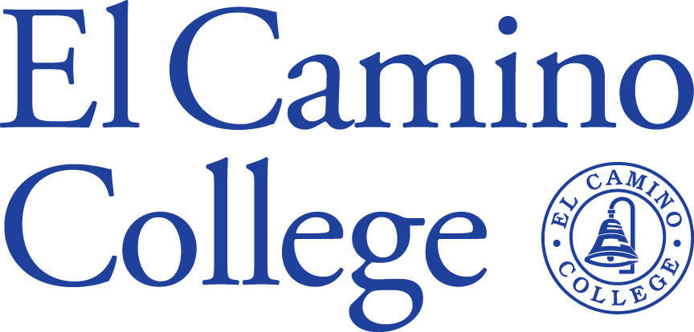

College & Career Access
Where I'm headed after high school

What I Plan on Doing
After graduating from high school in less than two months, I plan on attending El Camino College for one to two years before transferring to a four year university to get my bachelor's degree in computer science.
I chose this path because I want to be able to transfer to a target school for computer science since those tend to have many more opportunities for things like internships, clubs, and job fairs. Going to community college would let me get a restart on my GPA and give me the opportunity to transfer to a really good four year.
In terms of my future career, I want to work as a software engineer or something similar in the tech industry. I'd like to work somewhere where I can do my hobbies like programming and biking, and so I think working in tech would give me the most enjoyment.